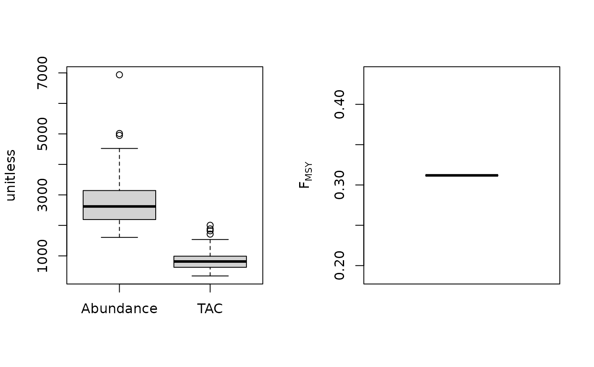
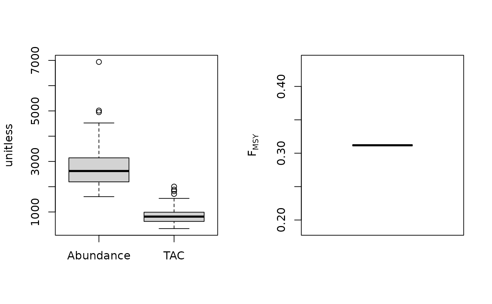

FMSY/M ratio methods
Fratio.RdCalculates the OFL based on a fixed ratio of FMSY to M multiplied by a current estimate of abundance.
Fratio(x, Data, reps = 100, plot = FALSE)
Fratio4010(x, Data, reps = 100, plot = FALSE)
DepF(x, Data, reps = 100, plot = FALSE)
Fratio_CC(x, Data, reps = 100, plot = FALSE, Fmin = 0.005)
Fratio_ML(x, Data, reps = 100, plot = FALSE)Arguments
- x
A position in the data object
- Data
A data object
- reps
The number of stochastic samples of the MP recommendation(s)
- plot
Logical. Show the plot?
- Fmin
Minimum current fishing mortality rate for the catch-curve analysis
Value
An object of class Rec-class with the TAC slot populated with a numeric vector of length reps
Details
A simple method that tends to outperform many other approaches alarmingly often even when current biomass is relatively poorly known. The low stock crash potential is largely due to the quite large difference between Fmax and FMSY for most stocks.
The TAC is calculated as: $$\textrm{TAC} = F_{\textrm{MSY}} A$$ where \(F_{\textrm{MSY}}\) is calculated as \(\frac{F_\textrm{MSY}}{M} M\) and A is estimate of current abundance.
The MP variants differ in the assumption of current abundance (see Functions section below)
Functions
Fratio: Requires an estimate of current abundance (i.eData@Abun)Fratio4010: Paired with the 40-10 rule that throttles back the OFL to zero at 10 percent of unfished biomass. Requires an estimate of current depletion.DepF: Depletion Corrected Fratio: the Fratio MP with a harvest control rule that reduces F according to the production curve given an estimate of current stock depletion (made-up for this package).Fratio_CC: Current abundance is estimated using average catch and estimate of F from an age-based catch curveFratio_ML: Current abundance is estimated using average catch and estimate of F from mean lengths
Required Data
See Data-class for information on the Data object
Fratio: Abun, FMSY_M, Mort
Fratio4010: Abun, Dep, FMSY_M, Mort
DepF: Abun, Dep, FMSY_M, Mort
Fratio_CC: CAA, Cat, FMSY_M, Mort
Fratio_ML: CAL, Cat, FMSY_M, Lbar, Lc, Mort, vbK, vbLinf
Rendered Equations
See Online Documentation for correctly rendered equations
References
Gulland, J.A., 1971. The fish resources of the ocean. Fishing News Books, West Byfleet, UK.
Martell, S., Froese, R., 2012. A simple method for estimating MSY from catch and resilience. Fish Fish. doi: 10.1111/j.1467-2979.2012.00485.x.
Examples
Fratio(1, MSEtool::Atlantic_mackerel, plot=TRUE)
 #> TAC (median)
#> 3.788988
Fratio4010(1, MSEtool::Atlantic_mackerel, plot=TRUE)
#> TAC (median)
#> 1.970658
Fratio_CC(1, MSEtool::SimulatedData, plot=TRUE)
#> TAC (median)
#> 3.788988
Fratio4010(1, MSEtool::Atlantic_mackerel, plot=TRUE)
#> TAC (median)
#> 1.970658
Fratio_CC(1, MSEtool::SimulatedData, plot=TRUE)
 #> TAC (median)
#> 2640.814
Fratio_ML(1, MSEtool::SimulatedData, plot=TRUE)

#> TAC (median)
#> 4285.724
#> TAC (median)
#> 2640.814
Fratio_ML(1, MSEtool::SimulatedData, plot=TRUE)

#> TAC (median)
#> 4285.724